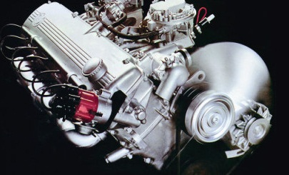
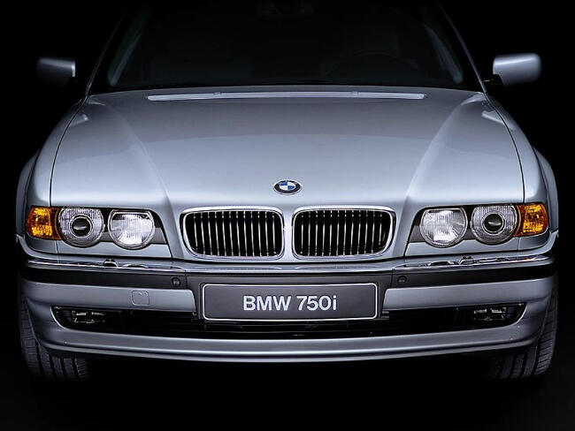

Главная
ГлавнаяBMW 7-серия E23
BMW 7 серия (кузов E23) — первый автомобиль представительского класса седьмой серии. Впервые был представлен под Мюнхеном в мае 1977 года. На презентации автомобиль окрестили, как «машина будущего — сегодня». Спустя месяц, первые автомобили сошли с конвейера. Ими стали модели 728, 730 и 733i. Кстати, над созданием новинки компания BMW трудилась пять лет.
Дизайн был взят у незадолго до того появившегося спорт-купе E24. Внешность седана получилась довольно солидной с характерными ноздрями, встроенными в решетку радиатора. Задняя часть выглядела чрезмерно громоздкой, что компенсировалось огромным 640-литровым багажником. Модель E23 вполне отвечала представлениям об автомобиле высшего класса: просторная планировка с отличными велюровыми или гобеленовыми анатомическими сиденьями (реже — кожаными), качественная обивка дверей и потолка, хорошее освещение салона, традиционно удобная планировка водительского места, хорошая обзорность и высокий уровень звукоизоляции.
Двигатели и модельный ряд
Двигатели для такого крупного (4860х1800х1430 мм) и тяжелого (2050 кг) седана были слабоваты. Рядные с карбюраторами Solex «шестерки» М30-В28 на модели 728 и М30-В30 на 730-й развивали мощность 170 и 184 л.с. соответственно, а М30-В32 с системой впрыска L-Jetronic на модели 733i — 197 лошадиных сил. Карбюраторные (Solex) 728 и 730 выпускались до 1979 года и были заменены на 728i с той же системой впрыска, в результате, эта модель стала самой успешной из всего модельного ряда первой 7 серии.
Этих двигателей явно было недостаточно, чтобы конкурировать с мощными моделями Mercedes-Benz. Проблему попытались решить, выпустив в июле 1979 года флагманскую модель 7-й серии — 745i Turbo с 3,2-литровым 252-сильным двигателем М30-В32/tb с турбонаддувом. Эта модель стала первым серийным автомобилем в мире с электронной четырехканальной антиблокировочной системой. Максимальная скорость возросла до 227 км/ч, а время разгона до сотни составило 7,9 с. На два месяца позже в производство пошла модель 735i, которую комплектовали силовым агрегатом М30-В35 3,5-литрового объема мощностью 217 л.с. и его 3,4-литровой модификацией М30-В34 той же мощности. Последний, с мая 1983 года, устанавливали на модель 745i, а его 252-сильную турбоверсию М30-В34/tb — на модель 745i Turbo.
| Модель | Код двигателя | Тип двигателя | Объем, куб.см. | Макс. мощность, л.с./об.мин. |
Макс.крутящий момент, Н.*м./об.мин. |
| 725 | М30В25 | P6 | 2494 | 150/5500 | 215/4300 |
| 728 | М30В28V | P6 | 2788 | 170/5800 | 238/4000 |
| 728i | М30В28 | P6 | 2788 | 184/5800 | 240/4300 |
| 730 | М30В30V | P6 | 2985 | 184/5500 | 260/3500 |
| 732i | М30В32LE | P6 | 3210 | 197/5500 | 285/4300 |
| 733i | М30В33LE | P6 | 3210 | 197/5500 | 280/4300 |
| 735i | М30В35LE M30B34V |
P6 P6 |
3453 3430 |
218/5500 218/5500 |
310/4000 310/4000 |
| 745i | М30В32LAE M30B34MAE |
P6 P6 |
3120 3430 |
252/5200 252/4900 |
380/2600 380/2200 |
Размеры
| Длина | 4860 мм |
| Ширина | 1800 мм |
| Высота | 1430 мм |
| Передняя колея | 1508/1502 мм |
| Задняя колея | 1522/1524 мм |
| Колесная база | 2795 мм |
| Клиренс | 135 мм |
| Объем багажника | 480 л |
Комплектация
E23 была высококлассной и сложной моделью для своего времени, она оснащалась бортовым компьютером, системой климат-контроля, системой ABS, новыми зеркалами и кожаной обивкой. Некоторые варианты моделей первой 7 серии поставлялись с кожаными сидениями, деревянной отделкой, электрическими сидениями, обогревателем, электрическими стеклоподъемниками и зеркалами, кондиционером, люком с электроприводом, CD-плеером Alpine и телефоном.
Кроме того, более поздние модели в период с 1985 по 1986 год предлагались с дополнительной подушкой безопасности для водителя.
Рестайлинг
В 1982 году был модифицирован салон. Дизайн торпедо и приборной доски был позаимствован у только что появившегося кузова E28 5-й серии. Также среди новшеств следует отметить появление Check-control, индикатора времени ТО (service indicator) и расходомера топлива. Изменения также коснулись подвески и дизайна. Ноздри стали менее выпуклыми и уже не так выступали из решетки радиатора, изменили задние фонари, а нижний спойлер удлинили за счет пластиковой юбки. Также был добавлен двигатель Motronic 3.4L. Тогда же увеличили и без того высокий уровень активной безопасности, оснастив дисковые тормоза всех колес с усилителем еще и АБС, что вкупе с гидроусилителем рулевого управления переменного усилия (с уменьшением действия на высокой скорости) вывело в вопросе безопасности модель на передовые по тому времени позиции.
Выпуск первого поколения 7-й серии было завершено в 1986 году, с введением нового седана E32. За все время производства E23 было выпущено 285 029 автомобилей.
BMW 7-серия E32
Второе поколение BMW 7-й серии (Е32) представили в сентябре 1986 года. Стиль БМВ Е32 7 серии был создан Эрколе Спада под руководством тогдашнего главного дизайнера Клауса Люте. Данное поколение сильно отличалось от незадачливой предшественницы (Е23), задав в своем классе новый стандарт управляемости. Качество сборки кузова на самом высоком уровне. В салоне очень низкий уровень шума. Второй ряд предлагает своим пассажирам массу пространства и удобные сиденья. Панель приборов представляла для своего времени действительно большой прогресс в эргономике. Хорошо читаемые приборы с множеством сервисных датчиков и указателей расположены в наиболее благоприятной зоне. У предшественницы многие разнородные переключатели и указатели находились «в куче», в новинке же они несколько разнесены и равномерно распределены по всей площади приборной панели в зависимости от значимости.
Двигатели и модельный ряд
Изначально были доступны 730i и 735i с 6-цилиндровым двигателем M30 и 750i с двигателем V12 — M70. 730i предлагалась в качестве модели начального уровня в течение всего периода производства. С более чем 80 000 произведенных единиц она отставала по продажам только от 735i и стала второй самой успешной моделью в 7 серии второго поколения. 735i с ручной или автоматической коробкой передач стала самой успешной моделью в этой серии из-за ее особенно хорошо сбалансированного соотношения цена-качество.
В сентябре 1987-го представлена удлиненная на 115 мм версия 750iL, на которую впервые для машин такого класса монтировали только 4-диапазонную автоматическую трансмиссию. Благодаря высокому крутящему моменту (450 Нм при 4100 об/мин) нового 300-сильного 5,0-литрового двигателя VI 2 разгон до 100 км/ч составлял всего 7,4 с, а ведь масса машины была не меньше 2,3 т.
Уровень активной и пассивной безопасности только с течением времени достиг подобающего уровня. Так с сентября 1989 года на модели 750i начали платно устанавливать противобуксовочную систему.
В 1992 году второе поколение 7 Series получило два новых 32-клапанных силовых агрегата — 3-х и 4-литровую V-образную восьмерку M60, устанавливаемую на 730i и 740i в паре с 4-ступенчатой автоматической или 5-ступенчатой механической коробкой передач. Обе версии были так же доступны с 5-ступенчатой автоматической коробкой передач ZF и с более длинной колесной базой.
BMW 767iL, так же известна как BMW Goldfish V16 — это прототип на который устанавливался 16-цилиндровый двигатель Goldfish V16. Он был спроектирован в 1987 году и построен к концу 1988 года. Его система охлаждения двигателя (радиатор) была перенесена в багажник и были добавлены дополнительные вентиляционные отверстия.
| Модель | Код двигателя | Тип двигателя | Объем, куб.см. | Макс. мощность, л.с./об.мин. |
Макс.крутящий момент, Н.*м./об.мин. |
| 730i | М30В30 M30B30 M60B30 |
Р6 Р6 V8 |
2985 2985 2997 |
197/5800 187/5800 218/5800 |
275/4000 260/4000 290/4500 |
| 735i | М30В35LE М30В35LE |
P6 P6 |
3430 3430 |
220/5600 211/5600 |
315/4000 305/4000 |
| 740i | М60В40 | V8 | 2982 | 286/5800 | 400/4500 |
| 750i | М70В50 | V12 | 4988 | 299/5200 | 450/4100 |
Размеры
| E32 | E32 Long | |
| Длина, мм | 4910 | 5025 |
| Ширина, мм | 1845 | 1845 |
| Высота, мм | 1411 | 1400 |
| Передняя колея, мм | 1530 | 1530 |
| Задняя колея, мм | 1558 | 1558 |
| Колесная база, мм | 2833 | 2948 |
| Клиренс, мм | 140 | 140 |
| Объем багажника, л | 501 | 501 |
Комплектация
По желанию заказчика любой автомобиль, кроме базовой комплектации, мог быть дооснащён любым количеством дополнительных опций. Были доступны различные варианты отделки салона: 2 варианта отделки велюром различных цветов, а также 3 варианта сортов кожи. базовая (Bizon), мягкая (Nappa c 92 года), а также толстая полуанилиновая кожа индийского водяного буйвола арни (Water Buffalo) всевозможных цветов. Кожаная отделка могла быть как частичной (сидения, подлокотники), так и полной, включая дверные панели, ручки, бардачки, и центральные консоли. Деревянная отделка салона также могла быть двух типов — стандартная Bubinga и т.н. исполнение из ценных пород Nussbaum — корень ореха. Так же были доступны различные опции, расширяющие функциональность автомобиля и комфорт при вождении. Их перечень был достаточно широк. Сидения с памятью и электроприводом, электрорегулировка поясничной опоры, подогревы. Для версий Long существовала опция раздельной регулировки заднего дивана, обогрев его, а также автоматические задние подголовники, выезжающие при защёлкивании ремня безопасности. Любая версия могла комплектоваться задней гидравлической подвеской с автоматическим поддержанием уровня, вне зависимости от загрузки автомобиля. Позже стала доступна опция EDC — выбор режима работы амортизаторов — комфорт либо спорт. С конца 1990 года стала доступна опция «стеклопакет», включающая двойные боковые стекла а также двойное заднее. Система отопления была либо обычная двухзонная, либо двухзонный климат с кондиционером, а также в климате могла дополнительно присутствовать опция «контроль загрязнённости воздуха». С помощью специального датчика система контролировала уровень пыли и содержания вредных примесей и в случае превышения — перекрывала забор воздуха снаружи включая рециркуляцию. Также впервые стали доступны системы переднего и заднего парктроников с ультразвуковыми датчиками, ставшими в дальнейшем стандартом для всех производителей (в отличие от выдвижных антенн у Mercedes). Впервые в истории была применена технология линзованной оптики (у Е32 и Е34 даже в противотуманных фарах) а также первая в мире серийная система ксенонового света первого поколения (патент БМВ). Можно было заказать омыватель как фар, так и противотуманных фар. Система бортовой диагностики претерпела значительные изменения, вместо сигнальных ламп, информация стала выводиться на приборную панель в текстовом виде. Кроме сообщений о неисправностях и уровне жидкостей туда же выводилась вспомогательная информация вроде незакрытых дверей, багажника, капота, затянутом стояночном тормозе, перегреве мотора, не выключенных габаритах и т. д. Можно было дозаказать «зимние» опции: обогрев зеркал, форсунок омывателя, личинок замков, программируемую систему Webasto, работающую на бензине.
Что касается систем безопасности, то изначально опционально предлагалась только подушка безопасности водителя. с 92 года возможно было заказать эту опцию и для переднего пассажира. Все автомобили штатно оснащались системой ABS. За доплату можно было дозаказать систему EML — система которая ограничивает мощность двигателя при заносе или пробуксовке с помощью электрической дроссельной заслонки двигателя. После рестайлинга появились системы ASС, которая так же могла быть доукомплектована редуктором с автоматической блокировкой дифференциала в случае пробуксовки одного из колёс и ASC+T. Последняя была первой серийной системой полноценного трекшен-контроля у БМВ. Серийно все машины оснащались электроприжимом дворников в зависимости от скорости движения, обогревом лобового стекла в зоне щеток, электроприводами (с дожимом, даже когда автомобиль запирался ключом) всех стекл и зеркал. Впервые в истории БМВ, за работу электро систем отвечали специальные модули — модуль света, модуль комфорта, главный модуль и т. д… Впоследствии это станет стандартом для всех моделей.
Покупателям также предлагалась комплектация Highline. В этой комплектации были установлены встроенный, холодильник, 4-х зонный климат-контроль, а также могли быть установлены телефон, факс, возможность управления аудиосистемой с заднего кресла, подножки для задних пассажиров, а также столы, выдвигающиеся из передних кресел. Часто весь салон был отделан кожей, как правило Water Buffalo. Эта комплектация была доступна только в версии 750iL. В автомобиле только 4 места.
Рестайлинг
В марте 1992-го был проведен небольшой рестайлинг. В основном это были изменения в отделке салона (дерево инкрустированное другой породой, деревянная передняя пепельница и слегка другой пошив кожаных сидений)а самое главное, гамма двигателей была дополнена двумя двигателями V8, объёмом 3 и 4 литра, которые агрегатировались с 5-ступенчатыми автоматическими трансмиссиями или 5 ступенчатой механической коробкой (только 3,0 л). Версия 735i была снята с производства, в то время, как модель 730i выпускалась как с двигателем V8, так и со старой рядной шестёркой вплоть до окончания производства серии е32. Это было продиктовано идентичными показателями для нового, более технологичного двигателя M60 3 литра в сравнении со старым двигателем M30B34. Внешне новые машины с v8 отличались широкими «ноздрями» (аналогично версии 750i/iL), а также слегка измененными передними бамперами (в нижней части). Шестицилиндровая версия 730i внешне не изменилась.
Автомобиль выпускался с 1986 по 1994 год на заводе Dingolfing (Германия) и за все время производства было выпущено 311 068 автомобилей.
BMW 7-серия E38
В 1993 году компания BMW представила на автосалоне во Франкфурте полностью переработанное третье поколение роскошных седанов 7 серии — BMW E38, а с 1994 году автомобиль начали производить на заводе в Дингольфинге.
Экстерьер приобрёл более стремительные черты. Кузов стал более обтекаемым, фары объединили в блок с общим стеклом вместо прежних раздельных круглых. Компания не стала кардинально менять стайлинг одной из лучших своих моделей, но щедро оснастила новое поколение различными электронными системами.
BMW 7-й серии сохранил неповторимое сочетание комфорта, спортивной динамики и великолепной для такого большого автомобиля управляемости, что позволило обойти, наконец, по продажам Mercedes-Benz S-klasse. Большой салон (изобилие высококачественной кожи и отделки ценными породами дерева), в котором пассажиры на задних места могут даже вытянуть и размять ноги (особенно в удлиненной на 140 мм версии IL), выполнен в традиционном для германских производителей деловито-сдержанном стиле. Традиционно прекрасная на BMW компоновка водительского места (с памятью индивидуальных регулировок сиденья), органов управления и подсветка приборной доски производят приятное впечатление своей законченностью. При этом, в машине есть все необходимые элементы комфорта, включая электропакет и климат-контроль. (до 98-го года большинство опций не входило в стандартную комплектацию).За счет систем безопасности, в числе которых дополнительные боковые подушки безопасности, автоматически регулируемые по высоте ремни безопасности и т.д., цена автомобиля поднялась на 10%.
Двигатели и модельный ряд
Первыми моделями стали 730i и 730iL с 32-х клапанным 8-цилиндровым двигателем M60 с двумя верхними распределительными валами и системой изменения фаз газораспределения VANOS с модифицированной 5-ступенчатой коробкой передач, и 740i/740iL с тем же двигателем, только более мощным и работающим в паре с 6-ступенчатой трансмиссией. С 1996 года на 740-ю модель устанавливался 4,4-литровый двигатель M62. 740-я модель стала самой популярной за всё время производства Е38, она была выпущена в количестве — 129 356 и 740iL — 50 933 экземпляра.
Через четыре месяца после начала производства, в сентябре 1994 года была выпущена топовая модель 750i и особенно популярная удлиненная версии с увеличенной колесной базой 750iL с 5,4-литровым мотором V12 — M73 и 5-ступенчатой автоматической коробкой передач ZF.
В 1995 году стала доступна базовая версия 728i и 728iL с M52B28. Благодаря исключительной эффективности 728i, эта модель стала одной из самых успешных моделей в этой серии.
В 1996 году была представлена первая дизельная версия 7 серии — 725tds с 6-цилиндровым двигателем M51D25S с двумя клапанами на цилиндр. Из-за веса E38 (от 1905 до 2235 кг) автомобиль был мало производительным, но мог обеспечить низкий расход топлива. В том же, 1996 году была представлена ограниченная тиражом версия L7, которая является роскошней, чем 750iL, но с двигателем как и в 750-ой модели — M73B54. Люксовая модель имела раздвижную перегородку между передними и задними сиденьями, телефон, холодильник.
В 1996 году на замену 730-й версии компания БМВ выпускает 735i и удлиненную версию 735iL с двигателем V8 — M62.
В 1998 к модельному ряду E38 присоединилась 730d, оснащенная дизельным силовым агрегатом мощностью — M57D30. В 1999 же году была запущена топовая дизельная версия 740d c 3,9-литровым V-образным 8-цилиндровым турбо-дизелем TwinTurbo — M67.
| Модель | Код двигателя | Тип двигателя | Объем, куб.см. | Макс. мощность, л.с./об.мин. |
Макс.крутящий момент, Н.*м./об.мин. |
| 728i | М52В28 M52B28TU |
Р6 Р6 |
2793 2793 |
193/5300 193/5500 |
280/3500 280/3500 |
| 730i | М60В30 | V8 | 2997 | 218/5800 | 290/4500 |
| 735i | М62В35 М62В35TU |
V8 V8 |
3498 3498 |
235/5500 238/5800 |
320/3800 345/3800 |
| 740i | M60B40 М62В44 М62В44TU |
V8 V8 V8 |
3982 4398 4398 |
285/5800 286/5400 286/5400 |
400/4500 420/3600 440/3600 |
| 750i | М73В54 | V12 | 5379 | 326/5000 | 490/3900 |
| 725tds | М51D25TU | P6 | 2497 | 143/4800 | 280/2200 |
| 730d | М57D30 М57D30 |
P6 P6 |
2926 2926 |
184/4000 193/4000 |
390/2500 410/2500 |
| 740d | М67D40 | V8 | 3901 | 245/4000 | 560/2500 |
Размеры
| E38 | E38 Long | E38 L7 | |
| Длина, мм | 4984 | 5124 | 5370 |
| Ширина, мм | 1862 | 1862 | 1859 |
| Высота, мм | 1435 | 1425 | 1420 |
| Передняя колея, мм | 1552 | 1552 | 1549 |
| Задняя колея, мм | 1568 | 1568 | 1570 |
| Колесная база, мм | 2930 | 3070 | 3320 |
| Клиренс, мм | 120 | 120 | 120 |
| Объем багажника, л | 500 | 500 | 439 |
Комплектация
Седан отличает вместительный (500 л) и весьма удобный багажник с низкой кромкой. В число опций вошли такие штучки, как подогрев обода рулевого колеса, спутниковая система навигации GPS, телевизионный монитор и высококлассная фирменная аудиосистема BMW top Hi-Fi system с десятью динамиками и CD-чейнджером на 6 дисков в багажнике. Досадный недостаток — ограниченный обзор сзади (из-за высоких подголовников заднего ряда сидений) — не покажется малозначащим при маневрах в стесненных городских условиях. Решением проблемы стала автоматизированная система парковки, при включении которой аVтомобиль сам заруливает на свободное место стоянки.
Очень высокий уровень пассивной безопасности «семерок» обеспечивается надувными подушками как для пассажиров передних, так и для пассажиров задних сидений. Более того, новая система Head Protection System, представляющая из себя надувной зонт, который разворачивается по диагонали от стойки ветрового стекла до крыши над задней дверью, обеспечивает защиту голов сидящих впереди пассажиров. Безопасность тех, кто разместился сзади обеспечивают встроенные в двери воздушные подушки. Также автомбиль оборудован замками, блокирующими двери от открывания детьми, системой Dynamic Stability Control и встроенными сенсорами, которые автоматически открывают двери и включают аварийные огни и огни в салоне в случае серьезной аварии.
На БМВ Е38 устанавливался люк с электроприводом, аудиосистема с 14 динамиками и четырьмя сабвуферами, 6-дисковый CD-чейнджер, бортовая спутниковая навигация (на моделях 1994-1996 г.в. на основе системы VDO Dayton-Carin, с 1997-2000 на основе системы Phillips с отдельным приемником Trimble Navigation, модели 2001 г.в. на основе системы Phillips с встроенным приемником Trimble Navigation), автоматическая система климат-контроля с раздельными регуляторами для водителя и пассажира. Как опцию, можно было заказать кондиционер с автоматическим климат-контролем в заднюю часть салона, элементы управления и дисплей располагались на центральной консоли. В стандартное многофункциональное рулевое колесо интегрированы кнопки управления радио, круиз-контролем и рециркуляцией кондиционирования воздуха, что позволяет легко и безопасно управлять функциями не отрывая рук от руля. Автоматический климат-контроль с автоматической рециркуляцией воздуха, микро-фильтром и фильтром с активированным углем обеспечивает очищение и распределение воздуха. Фильтр очищает воздух в интерьере от вредных газов и даже от многих запахов. Стандартный автоматический климат-контроль поддерживает температуру воздуха немного меньшую чем в нижней части автомобиля, тем самым создавая комфортную атмосферу в салоне автомобиля.
Рестайлинг
В 1998 году кузов Е38 был обновлен. Была произведена подтяжка передней части автомобиля, обновились задние фонари, установлена спортивная подвеска, новые колеса и гидро-трансформатор. Кроме этого, был представлен для 7 серии новый спортивный пакет (который был первоначально доступен для версии 740i), улучшена автоматическая система климат-контроля, передние боковые подушки безопасности и стандартная система защиты головы.
Автомобиль выпускался с 1994 по 2001 год и за все время производства было выпущено 327 560 единиц автомобилей.
BMW 7-серия E65
BMW E65 7 Series четвертое поколение роскошных седанов 7 серии, которая была представлена в 2001 году на Франкфуртском автосалоне и запущена в Европе 17 ноября 2001 года. Эта модель стала заменой для E38 и выпускалась до сентября 2008 года. Разработка автомобиля началась ещё в начале 1996 года и была завершена в середине 2001 года, внешность автомобиля была создана главным дизайнером Крисом Бэнглом.
В четвертом поколении 7 серии впервые специальные версии кузова были обозначены отдельным кодом: удлиненная версия — E66, бронированная версии имела внутренний номер — E67 и версия работающая на водороде была обозначена как — E68.
Автомобиль поражает совершенно новым, незнакомым интерьером, где нет привычных разнообразных клавиш и переключателей. Очутившись внутри BMW E65/E66, внимание привлекает тот факт, что на том месте, где у всех прочих автомобилей находится рычаг коробки передач, здесь установлен небольшой джойстик, управляющий всеми основными функциями машины. Данная система, именуемая «iDrive», была продемонстрирована BMW на нескольких выставочных шоу-карах, однако мало кто предполагал, что она столь быстро доберется до серийного автомобиля.
Управляться с «iDrive» довольно просто. Вращая и нажимая джойстик, выбирается одна из ключевых систем автомобиля, чьи параметры надо узнать или изменить. Это может быть бортовой компьютер, «навигатор», коммуникационные или аудиосистемы, системы безопасности… Вся необходимая информация выводится на большой жидкокристаллический дисплей, венчающий консоль.
Двигатели и модельный ряд
Впервые на рынок выпустили 735i и 745i с V-образным 8-цилиндровым двигателем N62. В марте 2002 года была представлена на Женевском автосалоне удлиненная версия E66 (на 140 мм длиннее от базовой версии) — 735Li и 745Li с теми же двигателями что и 735i и 745i. В сентябре 2002 года началось производство дизельной версии 730d с 6-цилиндровым 3,0-литровым турбо-дизельным мотором M57TU и 740d c V-образным 8-цилиндровым 3,9-литровым турбо-дизельным двигателем M67TU. Дизельный вариант удлиненной 740 модели был не доступен.
В январе 2003 года была представлена самая мощная версия — 760i и 760Li с 6,0-литровым V-образным 12-цилиндровым двигателем N73. В этом же году, в феврале была представлена бронированная модель E67 760Li High Security, а в марте стартовало производство 730i и 730Li с новым пакетом оборудования Sport Package. В октябре автомобили стали оснащаться адаптивными фарами, системой IDrive с двумя дополнительными кнопками, Bluetooth соединение с мобильным телефоном, экраном с расширенной функциональностью и автоматическим климат-контролем с датчиком запотевания.

В апреле 2005 года модельный ряд 7 серии обновился. Седан стал более изысканней и спортивней. Были представлены новые варианты двигателей для 730i и 730Li — 3,0-литровый N52. 740i и 740Li заменили 735i и 735Li с двигателем N62. 750i и 750Li заменили 745i, 745Li и 745Li High Security, а 745d заменяет 740d. Дизельные модели E65 стали оснащаться сажевым фильтром. В августе 2005 года производительность 745d была увеличена на 30 л.с., и добавлена до модельного ряда удлиненная версия с дизельным двигателем 730Ld с турбо дизельным силовым агрегатом M57TU2D30. В конце 2006 года компания BMW представила Hydrogen 7 созданную на основе 760Li. Автомобиль оснащен двигателем V12 — N73B60 и был произведен в количестве 100 единиц.
| Модель | Код двигателя | Тип двигателя | Объем, куб.см. | Макс. мощность, л.с./об.мин. |
Макс.крутящий момент, Н.*м./об.мин. |
| 730i | М54В30 N52B30 |
Р6 Р6 |
2979 2996 |
231/5900 258/6600 |
300/3500 300/2500 |
| 735i | N62B36 | V8 | 3600 | 272/6200 | 360/3700 |
| 740i | N62B40 | V8 | 4000 | 306/6200 | 390/3700 |
| 745i | N62B44 | V8 | 4398 | 333/6100 | 450/3600 |
| 750i | N62B48 | V8 | 4799 | 367/6300 | 490/3400 |
| 760i | N73B60 | V12 | 5972 | 445/6000 | 600/3950 |
| 730d | М57D30TU М57D30TU2 |
P6 P6 |
2993 2926 |
218/4000 231/4000 |
500/2000 520/2000 |
| 740d | М67D40TU | V8 | 3901 | 258/4000 | 600/1900 |
| 745d | М67D44 | V8 | 4423 | 330/3800 | 750/1900 |
Размеры
| E65 | E66 Long | |
| Длина, мм | 5029 | 5169 |
| Ширина, мм | 1902 | 1902 |
| Высота, мм | 1492 | 1484 |
| Передняя колея, мм | 1578 | 1578 |
| Задняя колея, мм | 1582 | 1582 |
| Колесная база, мм | 2990 | 3130 |
| Клиренс, мм | 120 | 120 |
| Объем багажника, л | 500 | 500 |
Комплектация
Все силовые агрегаты оснащались шестиступенчатыми АКПП фирмы ZF, которые появились на серийных автомобилях впервые в мире. Управление режимами (автоматический режим, задний ход, паркинг, нейтраль) коробки передач осуществлялось с помощью рычага, расположенного под рулём. Также присутствовала возможность переключения передач вручную, используя клавиши на рулевом колесе.
Четвёртое поколение BMW 7-й серии выпускалось только с задним приводом. В базовой комплектации автомобиль оснащался пассивной подвеской (передние стойки McPherson; сзади - многорычажная подвеска), но за дополнительную плату появлялась возможность обзавестись системами Dynamic Drive (активные стабилизаторы поперечной устойчивости передней и задней подвесок для снижения бокового крена) и EDC (система регулировки жёсткости амортизаторов имеет два режима: комфорт и спорт). Также имелась возможность установить заднюю пневмоподвеску, поддерживающую постоянный клиренс вне зависимости от нагрузки на заднюю ось.
Одним из уникальных новшеств стало появление системы iDrive, способной заменить многочисленные органы управления сервисными устройствами. Система представляет собой компьютер, управляемый одним единственным контроллером, расположенным на центральной консоли. С его помощью можно перемещаться по меню системы, которое разбито на восемь категорий: BMW Assist, телефон, бортовая информация, навигация, помощь, развлечения, настройки, климат
Для отделки салона автомобиля использовалась чёрная вишня или ясень. Сиденья передних пассажиров оснащались электрическим приводом. Опционально были доступны сиденья повышенной комфортности (они имели дополнительные регулировки: подколенная опора, поясничная опора, ширина спинки, плечевая опора, высота подголовника) или спортивные сиденья (дополнительные регулировки: подколенная опора, высота подголовника). Кроме того и задние и передние сиденья могли иметь обогрев, вентиляцию и массаж. В качестве обшивки предлагалось несколько вариантов кожи.
У автомобиля отсутствует стояночный тормоз в традиционном его понимании — нет ни рычага на центральной консоли, ни педали. Стояночный тормоз активируется нажатием специальной кнопки на панели приборов. Такой тормоз способен остановить автомобиль в случае отказа основной тормозной системы.
Рестайлинг
Рестайлинг в 2005 году существенно изменил внешность модельного ряда E6x. Четвертое поколение 7 серии получило изменения стиля в передней и задней частей. Была пересмотрена так же подвеска и установлены в зависимости от модели улучшенные тормоза, би-ксеноновые фары и двухступенчатые стоп-сигналы в стандартной комплектации. Конструктивно изменились передний и задний бамперы, поменялась решетка радиатора, изменены передняя и задняя оптика, обновлен капот, появились новые диски и новые цвета кузова. Так же добавлены новые отделочные материалы салона. Были обновлены зеркала, а система IDrive устанавливалась в качестве стандартной функции.
В 2005 году также была существенно изменена линейка предлагаемых двигателей (см.выше).
BMW 7-серия F01
BMW F01 7 Series пришла на смену роскошному седану E65 7 серии в октябре 2008 года, когда она была представлена на Парижском автосалоне, и уже в ноябре этого же года автомобиль поступили в продажу.
Производство БМВ Ф01 стартовало в 2008 году на заводе в Дингольфинге, и к концу года было запланировано выпустить 10 000 автомобилей. Затраты на производство должны были сократится на 30% по сравнению с его предшественником Е65.
Двигатели и модельный ряд

7 серия с удлиненной колесной базой на 140 мм имеет внутреннее обозначение — F02 и в обозначении модификации имеет индекс — Li или Ld (в зависимости от того, бензиновый мотор установлен или дизельный). Так же как и предшественники, модельный ряд седана 7 серии включает в себя и бронированные версия с индексом F03 (High Security), которые основаны на моделях 750Li и 760Li. BMW F04 — это гибридная версия седана и была обозначена как — ActiveHybrid 7.
В начале выпуска были доступны 730i и 730Li с двигателем N52, а так же 740i, 740Li, 750i, 750Li и 730d. 3-литровый турбированный шестицилиндровый двигатель N54B30 для 740i и 740Li выдает такую же мощность, как двигатель V12 в модели 750i E38, а благодаря 6-ступенчатой автоматической коробки передач 740-я версия разгоняется с 0 до 100 км/час за 5,9 секунд и потребляет менее 10 литров на 100 км пробега.
C июля 2012 года на БМВ 740 устанавливается двигатель N55 и 8-ступенчатая автоматическая коробка передач. 750i, 750Li и бронированная 750Li оснащаются V-образным 8-цилиндровым двигателем N63B44 с двойным турбонаддувом и прямым впрыском. Мотор работал в паре с 6-ступенчатой автоматической коробкой передач до обновления в 2012 году, после, 6-ступенчатая трансмиссия была заменена на 8-ступенчатую.
После обновления модельный ряд 5-го поколения 7 серии получил новые светодиодные фары, решетку радиатора и модифицированный передний спойлер. Внутри изменения коснулись многофункционального дисплея с 3D-графикой и новые поколение навигационной системы Professional. Наиболее эффективный 6-цилиндровый дизельный двигатель в своем классе — N57D30OL был установлен на 730d и позволил иметь средний расход всего 7,2 литра с мощность 245 л.с.. 730-я дизельная модель от 0 до 100 км/час разгоняется за 7,2 секунды, а выбросы CO2 составляют — 192 г/км. Этот двигатель оснащен турбонагнетателем, с изменяемой геометрией турбины и общей топливной рампой с прямым впрыском и комплектовался 6-ступенчатой автоматической коробкой передач.
Двигатель N57 так же устанавливался и на удлиненную версию — 730Ld с 2009 по 2012 годы. После 2012, на 730Ld начали устанавливать обновленный мотор N57D30OL с увеличенной мощностью до 258 л.с.. Этот же, обновленный двигатель с 2012 года устанавливался на полноприводный седан 730d xDrive, а на смену 6-ступенчатой, пришла 8-ступенчатая коробка передач.
В апреле 2009 года на автосалоне в Шанхае состоялась мировая премьера 6-литровой версии — 760i/760Li/760Li Security с 12-цилиндровым двигателем N74, впервые оснащенным двойным турбонаддувом. По сравнению с предшественником, он потребляет на 4,5% меньше топлива, а от 0 до 100 км/час разгоняет седан за 4,6 секунды.
25 июня 2009 года компания BMW представляет инновационный седан 7-ой серии 2010 модельного года с полным приводом — 750i и 750Li xDrive и новую дизельную версию 740d и 740Ld с двигателем N57D30TOP с двойным турбонаддувом, изменяемой геометрией турбины и общей топливной рампой с прямым впрыском.
В 2012 году на двигателе N57D30TOP мощность была увеличена с 306 до 313 л.с. 13 августа 2009 года состоялась презентация гибридного седана ActiveHybrid 7. На эту модель устанавливается бензиновый 465-сильный 8-цилиндровый двигатель N63 с двойным турбонаддувом, непосредственным впрыском топлива + электродвигатель.
В 2012 году на Active Hybrid устанавливается 6-цилиндровый бензиновый 354-сильный двигатель N55B30 с турбокомпрессором, непосредственным впрыском и системой Valvetronic.
С сентября 2010 года доступна дизельная модель 740d xDrive с полным приводом, и оснащается она тем же силовым агрегатом что и заднеприводная версия 740d.
В мае 2012 году BMW представляет третью, топовую дизельную версию Ф01 — 750d xDrive и 750Ld, на которую устанавливается 6-цилиндровый двигатель N57S с турбокомпрессором, изменяемой геометрией турбины и общей топливной рампой с прямым впрыском.
| Модель | Код двигателя | Тип двигателя | Объем, куб.см. | Макс. мощность, л.с./об.мин. |
Макс.крутящий момент, Н.*м./об.мин. |
| 730i | N52B30 | Р6 | 2996 | 258/6600 | 300/2500 |
| 740i | N54В30T0 N55B30 |
Р6 Р6 |
2979 2979 |
326/5900 320/5800 |
450/3500 450/2300 |
| 750i | N63B44 | V8 | 4398 | 407/5500 450/5500 |
600/2000 650/2000 |
| 760i | N74B60 | V12 | 5962 | 544/5250 | 750/1500 |
| 730d | N57D30 | P6 | 2993 | 245/4000 258/4000 |
540/1500 560/1500 |
| 740d | N57D30TOP | P6 | 2993 | 306/4400 313/4400 |
540/1500 560/1500 |
| 750d | N57D30S | P6 | 2993 | 381/4000 | 740/2000 |
| ActiveHybrid7 | N63B44+ электромотор N55B30+ электромотор |
V8 P6 |
4398 2979 |
465/5500 354/5800 |
700/2000 500/2300 |
Размеры
| F01 | F02 Long | |
| Длина, мм | 5079 | 5219 |
| Ширина, мм | 1902 | 1902 |
| Высота, мм | 1470 | 1481 |
| Передняя колея, мм | 1611 | 1611 |
| Задняя колея, мм | 1650 | 1650 |
| Колесная база, мм | 3070 | 3210 |
| Клиренс, мм | 152 | 152 |
| Объем багажника, л | 500 | 500 |
Комплектация
Дизайн, а так же другие «автомобильные черты» в F01 были взяты от предшественников E32, E38 и E65, в том чисел от представленного в 2007 году концепта — BMW Concept CS.

Седан Ф01 7 серии укрепляет свои позиции как наиболее инновационный, флагманский седан класса «люкс» воплощая в себе спортивную элегантность, роскошный комфортный салон, мощные и в тоже время экономичные двигатели работающие в паре с современной трансмиссией.
Динамичные линии и прекрасно сбалансированные пропорции подчеркивают спортивность в элегантном F01. Типичная, закругленная форма крыши придает автомобилю вид спортивного купе за счет запаса в тылу. Удлиненная версия поставляется с отдельным дизайном крыши и, следовательно, как и в предыдущих моделях дополнительная длина дает больше места для пассажиров на задних сиденьях.
Эксклюзивный внешний вид с сильным характером, новые адаптивные светодиодные фары, решетка радиатора, хромированные предкрылки на переднем бампере и большие воздухозаборники укрепляют общий мощный эффект седана 7 серии.

Интерьер автомобиля качественно выполнен из первоклассных материалов, и в отличии от предшественника, в новой серии произошли изменения, например рычаг переключения передач с рулевой колонки возвращается на центральную консоль, а операционная система IDrive, впервые введена в предыдущей модели — получила совершенно новую операционную структуру.
BMW ConnectedDrive является ключом к комфорту и уверенности за рулем, наряду с непревзойденной безопасностью. Уникальная комбинация систем помощи водителю и мобильных услуг позволяют роскошному седану продемонстрировать свое инновационное и техническое превосходство над своими соперниками. Для этого, BMW ConnectedDrive включает в себя впечатляющие новые возможности, которые позволят седану сохранить свои лидирующие позиции в люксовом сегменте.
Широкий выбор дополнительного оборудования объединяются с самыми современными технологиями безопасности, создают автомобиль повышенной комфортности. Система привода и шестицилиндровый бензиновый силовой агрегат ActiveHybrid 7, устанавливает новые стандарты производительности и эффективности, а такие технологии как функция Auto Start-Stop, рекуперация энергии торможения, режим ECO PRO с расширенными функциями способствуют экономии топлива.
Рестайлинг
Спустя почти четыре года после дебюта пятого поколения BMW 7-Series (F01 / F02), баварский автопроизводитель подготовил обновленную версию своего флагманского седана, получившего ряд технических и внешних изменений, а также модернизированный интерьер.
Рестайлинговый седан БМВ 7-серии 2013 модельного года получил новые светодиодные фары с традиционными для марки светящимися кольцами и «элегантной акцентирующей накладкой». Знаменитые «ноздри» слегка изменили форму — вместо прежних 12 вертикальных планок теперь 9. Кроме того, автомобиль обзавелся иным передним бампером. По бортам появился новый элемент оснащения – встроенный в нижнюю часть наружного зеркала заднего вида указатель поворота. А на заднем бампере добавилась хромированная накладка.
Несколько новшеств появились и в салоне, например, новые кожаные сиденья для водителя и переднего пассажира. Опционально можно поставить задние сиденья, сделанные на заказ под индивидуальные требования покупателя. Кроме того, инженеры снизили уровень шума в салоне при движении автомобиля. Появилась 1200-ваттная аудиосистема Bang & Olufsen объемного звучания, а для задних пассажиров опционально предлагается развлекательная система с двумя 9,2-дюймовыми мониторами. Еще одно нововведение было позаимствовано у БМВ 5-серии F10. Это цифровая приборная панель, предлагающая на выбор четыре различных варианта ее оформления. Для водителя появился многофункциональный приборный дисплей за рулевым колесом, который можно настроить под собственные требования. Изменился и центральный контрольный дисплей, который теперь отображает 3D-изображения высокого разрешения.
Одним из наиболее важных изменений стали новые и полностью переработанные варианты двигателей. Разработчики снизили расход топлива и уровень выброса вредных веществ в атмосферу. В линейке дизелей появился новый 3,0-литровый шестицилиндровый движок с тремя турбинами, дебютировавший ранее на модели M550d xDrive. Этот 381-сильный (740 Нм) мотор устанавливается на модификацию 750d xDrive, обеспечивая разгон до сотни за 4,9 секунды. По данным автопроизводителя, средний расход седана в смешанном цикле с новым дизелем составляет 6,4 литра на 100 км пути. Максимальная скорость ограничена электроникой на 250 км/ч.
Новшества в списке систем безопасности — система ночного видения BMW и система Dynamic Light Spot с функцией распознавания пешеходов, неслепящая система управления светодиодным дальним светом, система Driver Assistant Plus с функцией Stop&Go, система активной защиты Active Protection с автоматическим распознаванием усталости водителя, а также индикатор ограничения скорости, включая запрет на обгон с символов соответствующих дорожных знаков.
Как отмечает производитель, новый BMW 7 Series – первый в мире автомобиль, оснащенный электронной системой регулировки амортизаторов, которые индивидуально для каждого колеса адаптируются к соответствующему качеству дорожного покрытия и стилю вождения. Кроме того, все заднеприводные версии «семерки» впервые получат рулевое управление с электроусилителем EPS, которое обеспечивает поддерживающее усилие с помощью электродвигателя (в базовой комплектации).